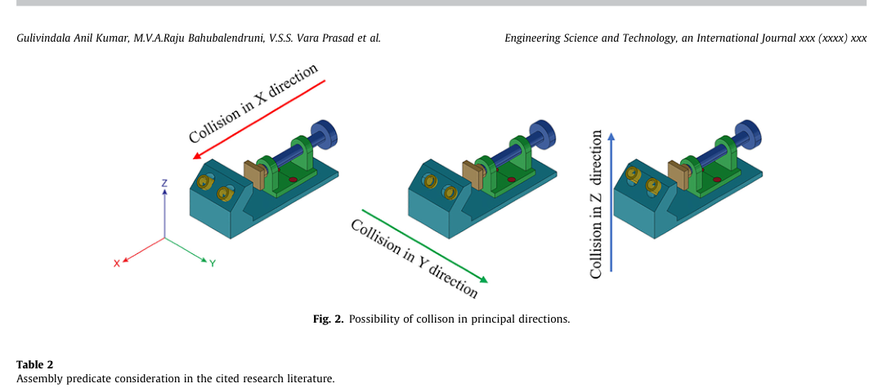
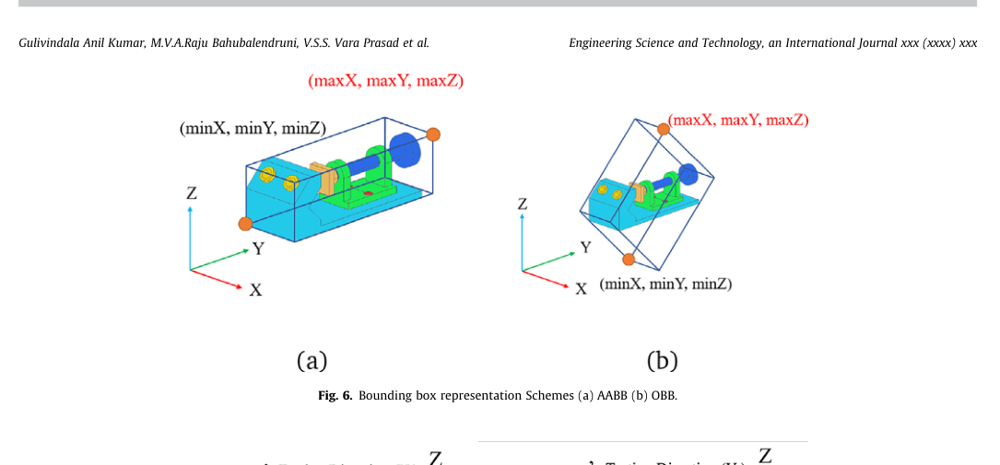
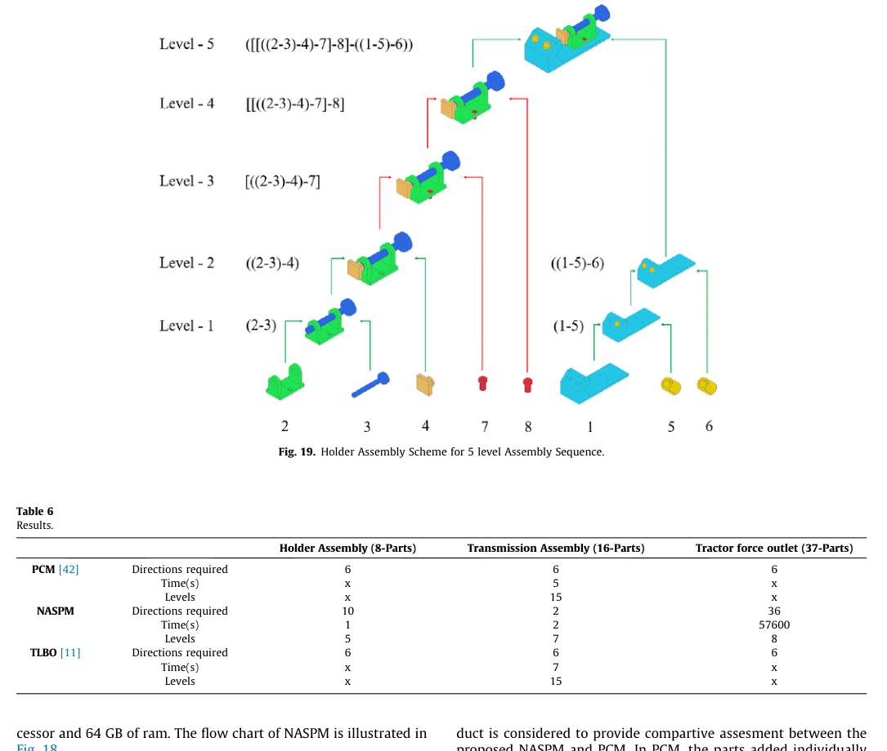

A novel geometric feasibility method to perform assembly sequence planning through oblique orientations
Automated geometric feasibility testing had been limited to the six principal axes. This work introduced the Oblique-Directional Interference Matrix (ODIM), which tests any direction derived from part geometry, so products with oblique mating features can be planned without manual intervention.
Problem
A feasible assembly sequence requires each part to reach its final position without colliding with the parts already in place. Earlier checks moved parts only along ±X, ±Y and ±Z. When a product had obliquely oriented mating features, an engineer had to identify the feasible paths by hand.

Method
Candidate directions come from the surface normals of each part. They are filtered with liaison-based conditional interference checks, then validated in two stages: a fast bounding-box check that skips expensive collision queries when parts are spatially separated, and a hard check that moves the part in increments through the remaining clearance. Because CAD tools report bounding boxes in each part's local coordinate system, each candidate direction is transformed with a direction cosine matrix before the oriented box is built.

Feasible directions are stored in the matrix and used by an extended part-concatenation planner (NASPM) that tests liaison, stability and geometric feasibility during hierarchical subassembly generation.
Results
The method was validated on an 8-part holder, a 16-part transmission and a 37-part tractor force outlet. For the transmission, the number of assembly levels fell from 15 (PCM and TLBO baselines) to 7, using two directions instead of six. For the tractor outlet, NASPM produced a valid 8-level sequence where principal-axis methods required human intervention.

Figures reproduced from the open-access article under CC BY-NC-ND 4.0.